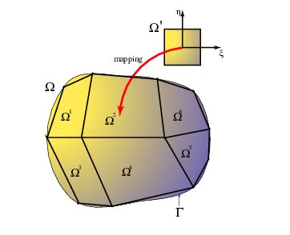
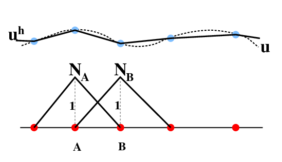
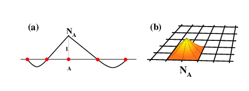

Practical Finite Elements¶
Weak Forms of Real Equations¶
As we discovered earlier, the Galerkin form of weighted residual approximate method can be made equivalent to a full variational problem if integration by parts is employed in the correct manner. This then allows the development of fully automatic variational methods for arbitrary strong forms of the governing equations. From here on we follow the notation of Hughes (The Finite Element Method) which is reasonably clear.
1D Heat Conduction¶
The differential or strong form of the equation we have encountered a number of times is
where the boundary conditions are supplied at either end of a domain of unit length.
To find the weak form of the equation we need to have a set of functions \(\curly S\) to use for the trial functions which satisfy the boundary condition \(\curly g\) on \(u\) at \(x=1\). We also need a set of weighting functions which are zero at \(x=1\) which we call \(\curly V\). The weighting functions play the role of the variations.
The statement of the weak form of the problem (as distinct from its solution which will wait till later) is then to find \(u \in {\curly S}\) such that for all \(w \in {\curly V}\)
This looks a lot like the variational solutions we found before. How do we get to it ? The procedure is relatively general (except that in higher dimensions it becomes more time consuming). First assume we have found the solution to the strong form, \(u\). This must satisfy
by the definition of the problem, as long as \(w\) is well behaved, which is ensured by a sensible choice of weighting functions. This starts to look a lot like the Galerkin approach although we are not yet seeking an approximate solution. Now integrate by parts to give
the boundary conditions on \(du / dx\) are substituted to give the weak form as above. We write the equation in terms of the symmetric operators:
to obtain an abstract form which can be used for all the finite element formulations we derive here
Note, that the partial differentiation step produces a symmetric operator from the non symmetric initial form. This approach also works in 2D as follows.
2D Heat Conduction¶
Define a heat flux (vector), \(\mathbf{q}\) related to temperature, \(u\) as follows
where \(\mathbf{K}\) is the symmetric conductivity tensor. (This is the generalized version of Fourier’s law). A volumetric heating rate of \(\curly f\) gives the following strong form
where \(\Gamma_ {\curly g}\) and \(\Gamma_{\curly h}\) are the regions of the boundary with fixed temperatures and fixed fluxes respectively, \(\mathbf{n}\) is the unit normal over \(\Gamma_{\curly h}\).
The corresponding weak form (found in the usual way) is
The symmetry of the operator is not obvious here until we substitute the constitutive law to obtain
2D/3D Fluid Flow¶
Now we finally come around to the problem we really need to solve. The strong form of the Stokes’ flow problem is identical to that of linear elasticity (which is what all the finite element textbooks deal with). The general constitutive law is
which reduces to \(\sigma_{ij} = \eta \epsilon_{ij}\) for homogeneous fluid. \(\epsilon_{ij}\) is defined by
where \(\mathbf{u}\) now represents the fluid velocity.
The strong form of the equation is
with a corresponding weak form
Which is symmetric in the trial functions and the unknown velocities since
Galerkin Approximate Weak Form¶
We have one last task before we can develop a real numerical method. How do we get away from the highly abstract notion of trial functions, weighting functions, and weak forms to produce a compact system of equations which can be written out in a nice tidy matrix form. The answer lies in the Galerkin approximate solution method. Let us go back to the 1D problem for a moment. We have to express our solution in terms of a sum over basis functions as before
where the \(h\) superscript indicates that we have moved from an infinite choice of functions to a finite one based on the discrete functions \(N_A\) which we will define in a minute, although for now we need to ensure that they are zero where the boundary conditions apply in the same way as \(\curly V\). We define a corresponding expansion for \(u\)
which includes an extra basis function to allow the boundary condition (\(u(1)={\curly g}\)) to be satisfied.
Substituting into (\ref{eq:FEabst}) gives
Our operators are symmetric and wholly linear, so the order of summation and application of the operator can be interchanged freely to give: $\( 0 = \sum_{A=1}^n c_A G_A \)$
where
As we have done many times before, we appeal to the argument that the particular choice of variation must be totally arbitrary: this equation must hold no matter what \(w^h \in {\curly S}^h\) we choose, and hence no matter what the combination of \(c_A\) may be. This then means that \(G_A\) must be identically zero independent of \(c_A\), i.e.
As in the standard variational method, we have eliminated all references to the actual variation and left unknowns which only related to the physical variables (i.e. the coefficients of the expansion for \(u\)).
If we simply write $\( \begin{split} K_{AB} &= a(N_A,N_B)\\ F_A &= (N_A,{\curly f}) + N_A(0)h - a(N_A,N_n+1){\curly g} \end{split} \label{eq:FEstdform} \)$
then we have a matrix formulation immediately since (\ref{eq:gal2}) now becomes
or
The matrix \(\mathbf{K}\) is known as the stiffness matrix — the association with the matrix of stiffnesses from our discrete set of springs being obvious.
Generalization¶
The same argument can be applied to higher dimensions, and to problems with different constitutive laws, and vector unknowns, however, the identification of the components of the stiffness matrix with the operator \(a(\cdot,\cdot)\) acting on every possible combination of the galerkin basis functions still holds. When the unknowns are vectors, the basis functions are used in each respective direction which complicates the notation even more than before. Essentially, though it means that the entries to \(\mathbf{K}\) from each \(A\) and \(B\) are actually matrices which are \(n_{\rm dim} \times n_{\rm dim}\).
For example, in the constant viscosity Stokes’ flow problem, we now have
Discretization & Shape Functions¶
Although we have now nominally made our problem finite by expressing everything in terms of Galerkin basis functions, we have yet to decide what those functions ought to be. Whatever our choice, it should make the problem easy to compute numerically.

The choice of basis functions is very broad but we narrow it down by tying it very closely to the way we choose to split up the domain of our problem. With an integral method, the domain decomposition is simple since
which means that the decomposition shown above is as accurate as the representation of the boundary allows.
The functions which interpolate the node points at the corners of subdomains are a suitable set for use as an approximate basis as we require for the Galerkin formulation. This is easy to see if we consider a one dimensional problem.

In the one dimensional case, the choice of subdomains is limited to breaking up the line into a number of segments, though not necessarily of equal length. If the approximation to the continuum field, \(u\) is made by linear interpolation to give \(u^h\), then \(u^h\) can also be expressed as a sum on the local triangular functions \(N_A\)
This is an exact representation of the interpolation provided the \(N_A\) takes the value one at node \(A\) and zero at all other nodes, and varies in a linear manner in between.
Note that the functions all take the same form apart from scaling. Also, because the basis functions are localized around a node and its neighbours, the direct interaction between a node and its immediate neighbours is non-zero but the interaction with more distant nodes is zero. This makes the stiffness matrix banded — more importantly it is sparse and therefore the potentially enormous number of interactions (the square of the number of unknowns) is contained. This procedure can be extended to higher dimensions and to higher order interpolations as shown in [the Figure below][#shape-functions]
Naming of Things and What They are Like}¶
The interpolation functions are known as shape functions. The subdomains are known as elements. The elements correspond to the individual springs of our discrete example. The shape functions are pure interpolation functions of the required order within the element and can be differentiated the appropriate number of times. This means that the order of interpolation must match the order of derivatives in the FE operator. Crossing the element boundaries, the shape functions have discontinuous derivatives (as do the piecewise interpolations). Continuous derivative functions are possible (e.g. splines) but add significant complexity. Shape functions in 2D and 3D can be formed from the product of 1D shape functions in each direction.

Element Matrices¶
The domain decomposition illustrated above produces a minature version of the matrix problem on the individual elements themselves.
The interpretation of the local problem is similar to that of the individual springs in the discrete example we derived earlier. By assembling the individual under-constrained element problems into the full problem we obtain a soluble system with the correct number of boundary conditions etc. The local equilibrium problem is identical with that of the global problem. That is, we use the same variational form and the same operators to build the local matrices. In general, finite element methods are designed around the local element frame of reference and large problems assembled from smaller ones. The book-keeping involved is to track which degrees of freedom in the local problem are associated with which others in the global problem. Clearly the interaction coefficient between one degree of freedom and another is derived from the local equilibrium relationships of a number of elements because the shape function for a given nodal point is spread across a number of elements.
Numerical Integration¶
The real power of finite elements comes from its ability to handle remarkably distorted geometries with ease. (Obviously this only applies in two or more dimensions). This is possible because simple mappings can be derived to convert a distorted element into a regular one (square, cubic, regular-tetrahedral). This takes the form of a change of variables which can be done {\em fully automatically} if we make minor restrictions on the choice of distortions we allow the elements to have. This restriction takes the form of ensuring that the mappings which transform the element shape can be described by the shape functions of the element. This means that only linear mappings can be applied to linear elements. If we wish to map a curved boundary exactly, then elements which have the appropriate order shape functions have to be used even if they are not needed for the representation of the differential operator. (e.g. quadratic elements for a circular boundary). This concept produces “isoparametric” elements.
The mapping shown in is achieved by a change of variables
where \({\curly j}\) is the jacobian of the transformation defined by
In the isoparametric concept, the components of the jacobian can be written as, for example,
Now we have the integral of a number of things defined over a regular, square domain (or cube etc). A number of ways to estimate these integrals is available. For example, in 1D the familiar trapezium rule can integrate linearly interpolated functions exactly. Given that our approximate method has already reduced the degree of polynomial within the element to something manageable, it is possible to find integration schemes which produce the {\em exact} integral for our approximation — in other words introducing no further error.
One possibility which is commonly used is Gaussian quadrature. This is a textbook method which can be made exact for any order of interpolation function desired. For linear interpolation in 2D, the following rule applies (assuming that we have transformed to a square element)
In which \(n_{\rm int}\) is the number of points in the quadrature rule with co-ordinates \((\tilde{ \xi_l}, \tilde{ \eta_l})\). Each point has a weight associated with it of \(W_l\). For the four point rule:
\(l\) |
\(\tilde{\xi_l}\) |
\(\tilde{\eta_l}\) |
\(W_l\) |
|---|---|---|---|
1 |
\(-1/\sqrt{3}\) & \(-1/\sqrt{3}\) |
1 |
|
2 |
\(1/\sqrt{3}\) & \(-1/\sqrt{3}\) |
1 |
|
3 |
\(-1/\sqrt{3}\) & \(1/\sqrt{3}\) |
1 |
|
4 |
\(1/\sqrt{3}\) & \(1/\sqrt{3}\) |
1 |
The four-point rule in two dimensions is constructed by applying a two point, one dimensional rule to each of the coordinates in turn. The integrals along the edges of the elements which are required to construct the boundary force vectors are therefore should be calculated using the one dimensional, two point rule which, along an edge of the bi-unit master element is
\(l\) |
\(\tilde{\xi_l}\) |
\(W_l\) |
|---|---|---|
1 |
\(-1/\sqrt{3}\) |
1 |
2 |
\(1/\sqrt{3}\) |
1 |
This naturally extends to three dimensional elements and their two dimensional boundaries.
Standard Form for Everything¶
Consider the heat 1D conduction problem one more time. We can rewrite the generalized Fourier law as
If we express \(u\) in terms of the shape functions
This allows us to define a matrix \(\mathbf{B_A}\) which comes directly from the operators contained in the constitutive law.
Compare this with equation ( \ref{eq:FEstdform}) and, the more concrete example (\ref{eq:festokes}) and we see that the stiffness matrix coefficients can be obtained from
where \(\mathbf{D}\) is a matrix of material properties. This form can be used for all problems and may greatly simplify both programming and the automation of the development of the equations since now we simply need to be able to express the constitutive law in terms of the unknowns, build a material property matrix and plug this into standard machinery.
Constraints¶
We generally want to solve problems where there is a constraint on the unknowns. For example we wish to find a flow solution which also satisfies mass conservation (not unreasonable !). To see how this constraint may be applied we go back to the variational method and regard the equation \({\bf Kd = f}\) in the light of the functional
The vector which minimizes \({\cal F} ({\bf d})\) is the solution to \({\bf Kd = f}\) — this can be shown in the usual way. (Start with \( {\cal F}({\bf d + \varepsilon c}) \), where \(\varepsilon\) is a free, real parameter and \(\bf c\) is arbitrary).
Consider a single constraint,
which corresponds to specifying a value for one of the velocities in the problem having the index \(Q\) in the global numbering system. This constraint should be written as a function of \(\bf d\) in the following way:
Then finding the stationary value for the following function is equivalent to solving the constrained problem:
The condition that \(\bf d\) renders \(\cal H\) stationary is
Substituting for \(\cal H\) gives:
Since \(\bf c\) and \(l\) are strictly arbitrary,
Equivalently
which establishes the pattern expected for adding constraints to the physical problem: augmentation of all the matrices with some forces (\(\bf m\)) as well as velocities (\(\bf d\)) unknown. The coefficient matrix remains symmetric but is no longer positive definite.
An alternative way to enforce constraints and one which proves slightly simpler to implement, is to make an approximation to the Lagrange-multiplier as follows:
in which \(k\) is a large positive number. Form the following functional,
and consider the extremal values for \(\cal J\) which are defined by the following expression
Substituting for \(\cal G\) gives
Since \(\bf c\) is arbitrary, the following matrix equation is implied
Now the dimension of the problem is not changed; the constraints are introduced by addition of another matrix equation. In the limit \(k \rightarrow \infty\), \(d_Q \rightarrow {\curly g}\) and the constraint is applied exactly. The constraint of incompressibility is applied as the limiting case of slight compressibility. The large constant is known as the penalty parameter and gives its name to the method; its value is chosen according to the accuracy of the machine used to compute the solution to the problem. A suitable value is somewhere between \(10^7\) and \(10^9\), any smaller and the fluid volume may not be conserved during hydrostatic loading.
The penalty method is computationally very simple, but can be ill conditioned. This becomes a serious issue when the matrix equation is not solved by direct methods. In the latter case, it is preferable to introduce additional variables. These take the form of pressures which, in the slightly compressible flow case can always be eliminated in favour of the constraint, and then recovered as
The augmented matrix equation then becomes
The components of the \(\mathbf{G}\) matrix are, at the element level found from
The tilde indicates a pressure degree of freedom / shape function as constrasted with the standard velocity shape fucntions. The independent pressures require their own space of trial functions which can be of lower order than the velocity since the derivatives in the equations are also lower. In fact, it is necessary to use lower order functions for the pressure otherwise the problem is overconstrained and no non-trivial solution can be found. This is more of a difficulty when the penalty formulation is used since there are no additional variables and hence no associated trial functions. Instead a trick is used — the constraint terms are integrated using an order lower integration scheme than that required for exact solutions. The result turns out to be equivalent (usually) to the introduction of additional variables and lower order shape functions but the proof of this is another tricky matter.
Stresses¶
Note Derivatives of the shape functions are commonly not defined at the node points and consequently it is not possible to compute stresses etc at the nodal points. They are defined on the interiors of the elements and must be extrapolated to the nodes using some form of best fit procedure.